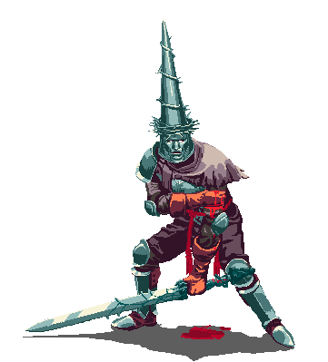

# PEBKAC - A Criptografia Nunca Foi o Problema ### Como erros humanos derrotam implementações criptográficas em ransomwares <div class="separator"></div> <span class="terminal-font text-muted">d0ndarr1on@blackhaven-01:~$ ./talk.sh --topic ransomware</span>
## whoami <div class="whoami-grid"> <div style="line-height: 2.0; font-size: clamp(0.7em, 1.5vw, 0.9em);"> -> <span class="terminal-font text-accent">Filippi Reis</span>, AKA <span class="terminal-font text-accent"> Smith</span>.<br> -> Baiano em terras sergipanas <br> -> Offensive Security. Security researcher. CTF Player<br> -> Maluco em tempo integral - AuDHD • Procastinador Profissional<br> -> Estudante CComp - Universidade Federal de Sergipe<br> -> @/RaulHC/Axesec/AFK<br> -> Foco: Purple Team • Baixo Nivel • Criptografia.<br> -> Curto analises, desafios, rock, livros e jogos Souls </div> <div style="flex-shrink: 0;"> </div> </div> <br> <span class="text-muted">"The night is dark and full of terrors."</span>
<span class="label">OBJETIVO</span> ## Demonstrar como nasce um decryptor * AES, RSA, ChaCha20 seguem **extremamente seguros** — se usados corretamente. * O que permite criar decryptors é puramente **erro humano**. * Implementação incorreta, gerenciamento inadequado de chaves, ou apreensão policial. * **PEBKAC: Problem Exists Between Keyboard And Chair.**
<span class="label">CONCEITO</span> ## Ransomware ≠ Wiper * **Ransomware:** Cifra para extorquir. A chave existe. O dado é recuperável. * **Wiper:** Cifra para destruir. A chave nunca existiu. O dado é perdido para sempre. <div class="box-red"> <strong>NotPetya (2017):</strong> Parecia ransomware, mas era wiper. A "chave" era um UUID aleatório descartado na hora. Mesmo pagando, impossível recuperar. </div> > "NotPetya não queria seu dinheiro. Queria ver o mundo queimar."
<span class="label">CONCEITO</span> ## Como um Ransomware Funciona? **Criptografia Simétrica (AES):** * Uma única chave para cifrar E decifrar. * Rápida. Ideal para arquivos grandes. * Problema: como entregar a chave sem ser interceptada? **Criptografia Assimétrica (RSA):** * Duas chaves: pública (cifra) e privada (decifra). * A chave pública pode ser compartilhada abertamente. * A chave privada nunca sai do atacante. <div class="box"> <strong>Ransomware real = Híbrido:</strong><br> 1. Gera chave AES aleatória (rápida)<br> 2. Cifra arquivos com AES<br> 3. Cifra a chave AES com RSA público do atacante<br> 4. Apaga a chave AES da memória<br> <span class="text-accent">Resultado: só o atacante (dono da chave privada RSA) pode recuperar.</span> </div>
<span class="label">CONCEITO</span> ## Diffie-Hellman ### Como criar uma chave sem nunca enviá-la <div class="box fragment"> <strong> Informações públicas</strong><br> Base: <span class="text-accent">g = 5</span><br> Módulo: <span class="text-accent">p = 23</span> Todos podem conhecer esses valores. </div> <div class="box fragment"> <strong>Alice</strong><br> Segredo: <span class="text-accent">a = 6</span> Calcula: <span class="text-accent">A = 5⁶ mod 23 = 8</span> Envia apenas o número <span class="text-accent">8</span>. </div> <div class="box fragment"> <strong> Bob</strong><br> Segredo: <span class="text-accent">b = 15</span> Calcula: <span class="text-accent">B = 5¹⁵ mod 23 = 19</span> Envia apenas o número <span class="text-accent">19</span>. </div> <blockquote class="fragment"> Alice e Bob nunca trocaram seus segredos. </blockquote>
<span class="label">CONCEITO</span> ## O que Eve consegue ver? <div class="box fragment"> <strong>👁 Eve capturou toda a comunicação</strong> g = 5 p = 23 A = 8 B = 19 </div> <div class="box fragment"> <strong>Mesmo assim...</strong> Alice calcula: <span class="text-accent">19⁶ mod 23 = 2</span> Bob calcula: <span class="text-accent">8¹⁵ mod 23 = 2</span> Os dois chegam exatamente à mesma chave. </div> <div class="box-red fragment"> <strong>Por que Eve não consegue?</strong> Ela precisa descobrir o segredo de Alice ou Bob. Isso significa resolver o <span class="text-red">Problema do Logaritmo Discreto.</span> Com chaves modernas (2048+ bits): <strong>computacionalmente inviável.</strong> </div> > "A chave nunca passou pela rede. Só a matemática."
<span class="label">BLOCO 1</span> ## Quando a Criptografia Funciona Casos onde o decryptor **NÃO** veio de falha técnica, mas de **apreensão policial**. A matemática permaneceu intacta.
<span class="label">BLOCO 1</span> ## CryptoLocker (2013) ### O Pioneiro da Criptografia Híbrida * **AES-256** para cifrar arquivos (rápido e implacável). * **RSA-2048** para proteger a chave AES (key wrapping). * Chave AES gerada aleatoriamente. Nunca toca o disco em texto claro. * Chave privada RSA existe apenas no servidor C2 do atacante. <div class="box"> <strong>Como foi derrotado?</strong><br> Operação Tovar (FBI/Interpol) → apreensão dos servidores C2 e chaves privadas.<br> <span class="terminal-font text-accent">A criptografia nunca foi quebrada. A infra que caiu.</span> </div>
<span class="label">BLOCO 1</span> ## Hive (2021-2022) * Grupo extremamente ativo. Alvejaram hospitais, infraestrutura crítica. * FBI manteve acesso à infraestrutura por **7 meses** antes de agir. * Em 2022, distribuíram chaves de decifragem para vítimas. * <span class="text-accent">A criptografia não foi quebrada. O C2 foi comprometido.</span> <div class="box-red"> <strong>Porém...</strong> Algumas variações tinham falhas humanas:<br> • Chave exposta na memória antes da limpeza<br> • Vazamento parcial no tráfego de rede<br> • Gerenciamento preguiçoso de buffers </div>
<span class="label">BLOCO 1</span> ## NotPetya (2017) — O Caso Atípico * Parecia ransomware: tela de resgate, endereço Bitcoin. * Na prática: corrompia permanentemente. A "chave" era aleatória e descartada. * Atribuído à Rússia. Alvo principal: Ucrânia. * Usava EternalBlue (NSA leak) para se espalhar. +$10 bilhões em danos. <div class="box-red"> <strong>Este NÃO é ransomware.</strong> É um wiper.<br> Usou criptografia como arma de destruição, não de extorsão.<br> <span class="text-red">Wiper ≠ Ransomware.</span> </div>
<span class="label-red">BLOCO 2</span> ## O Problema é o Dev Casos onde a criptografia era **teoricamente correta**, mas a implementação foi tão descuidada que decryptors surgiram em **horas ou dias**.
<span class="label-red">BLOCO 2</span> ## Petya — Versões Iniciais (2016) * **Abordagem inteligente:** Cifrava a MFT (Master File Table), não os arquivos. * Sistema nem conseguia "ver" os arquivos no disco. * **Falha:** Derivação de chave com entropia baixa. Seed previsível (dados da vítima). <div class="box-red"> <strong>Resultado:</strong> Decryptors exploraram a derivação frágil.<br> A ideia era genial. A execução deixou a porta aberta. </div>
<span class="label-red">BLOCO 2</span> ## Stampado — Criptografia de Centavos A "criptografia" era **XOR com reutilização de chave**. * Chave curta e repetida ciclicamente. * Dois arquivos com mesma keystream: `Cifra1 XOR Cifra2 = Plain1 XOR Plain2`. * Conhecendo um cabeçalho (ex: `%PDF-1.4`), recupera todo o resto. * Chave extraível do binário com `strings`. > "A matemática não perdoa preguiça. Ainda mais com XOR."
<span class="label-red">BLOCO 2</span> ## HiddenTear — O Presente que Virou Praga * **Origem nobre:** Material didático de um professor. Código aberto no GitHub. * **Uso criminoso:** Copiaram sem entender nada. Cegos no escuro. * Dezenas de variantes... **todas quebradas**. <div class="box"> O algoritmo era correto: AES-256.<br> <span class="text-red">A implementação criminosa conseguiu ser pior que a didática.</span> </div>
<span class="label-red">BLOCO 2</span> ## HiddenTear — Catálogo de Erros | # | Erro encontrado nas variantes | |---|------| | 1 | Chave em texto plano no binário (`strings ransomware.exe`) | | 2 | Reutilização de chaves (mesma chave para tudo e todos) | | 3 | Chave viva em memória por tempo excessivo (dump → extração) | | 4 | Sem limpeza de buffers (recuperação forense da RAM) | | 5 | Debug ativo em produção (`Console.WriteLine(senha)`) | | 6 | Senha hardcoded: `"MyCryptoKey123"` | <br> <strong>Resultado:</strong> Dezenas de decryptors públicos em dias.
<span class="label">BLOCO 3</span> ## Demo **Objetivo:** Provar a tese ao vivo. Containers isolados. dois cenários. * **Caso 1:** Ransomware bem implementado → AES-256 + RSA-4096 + limpeza de memória. * **Caso 2:** MESMO código, com erro humano → chave hardcoded, nonce fixo, sem RSA.
<span class="label">BLOCO 3</span> ## Caso 1: O Ransomware "Perfeito" * AES-256-CTR com chave aleatória (`/dev/urandom`). * RSA-4096 OAEP SHA-256 para key wrapping. * Nonce único por sessão. Limpeza explícita de memória (`memset` + `del`). <div class="box"> <strong>Resultado esperado:</strong><br> Impossível decifrar sem a chave privada RSA-4096.<br> <span class="text-red">Força bruta: 2^256 combinações. ~10^60 anos.</span><br> <span class="terminal-font text-accent">AES e RSA fizeram seu trabalho. Ninguém passa por eles.</span> </div>
<span class="label">BLOCO 3</span> ## Caso 1 — Código Fonte ```c [1-3|5-6|8-14|16-20|22-24|26-30] unsigned char chave_aes[32]; unsigned char nonce[16]; RAND_bytes(chave_aes, 32); RAND_bytes(nonce, 16); EVP_PKEY *rsa = EVP_RSA_gen(4096); EVP_PKEY_CTX *wctx = EVP_PKEY_CTX_new(rsa, NULL); EVP_PKEY_encrypt_init(wctx); EVP_PKEY_CTX_set_rsa_padding(wctx, RSA_PKCS1_OAEP_PADDING); EVP_PKEY_CTX_set_rsa_oaep_md(wctx, EVP_sha256()); unsigned char wrapped[512]; size_t wrapped_len; EVP_PKEY_encrypt(wctx, wrapped, &wrapped_len, chave_aes, 32); EVP_CIPHER_CTX *ctx = EVP_CIPHER_CTX_new(); EVP_EncryptInit_ex(ctx, EVP_aes_256_ctr(), NULL, chave_aes, nonce); unsigned char cifrado[4096]; int len, ciph_len; EVP_EncryptUpdate(ctx, cifrado, &len, dados, tamanho); EVP_EncryptFinal_ex(ctx, cifrado + len, &ciph_len); FILE *f = fopen("documento.encrypted", "wb"); fwrite(nonce, 1, 16, f); fwrite(wrapped, 1, wrapped_len, f); fwrite(cifrado, 1, len + ciph_len, f); fclose(f); OPENSSL_cleanse(chave_aes, 32); OPENSSL_cleanse(nonce, 16); EVP_CIPHER_CTX_free(ctx); EVP_PKEY_CTX_free(wctx); EVP_PKEY_free(rsa); ```
<span class="label">BLOCO 3</span> ## Caso 1 — Execução no Terminal <span class="terminal-font text-muted">$ python3 encrypt.py</span><br> <span class="terminal-font text-accent">[+] Chave AES-256: a3f2b8c1... (32 bytes aleatórios)</span><br> <span class="terminal-font text-accent">[+] Nonce: 7d4e9f2a... (16 bytes aleatórios)</span><br> <span class="terminal-font text-accent">[+] Chave AES envolvida com RSA-4096 OAEP</span><br> <span class="terminal-font text-accent">[+] Memória limpa. Chave AES só existe cifrada com RSA.</span> <div class="separator"></div> <span class="terminal-font text-muted">$ python3 decrypt_vitima.py</span><br> <span class="terminal-font text-red">[!] Chave AES está envolta em RSA-4096.</span><br> <span class="terminal-font text-red">[!] Força bruta: 2^256 combinações. ~10^60 anos.</span><br> <span class="terminal-font text-red">[✘] VEREDITO: MATEMATICAMENTE IMPOSSÍVEL.</span>
<span class="label-red">BLOCO 3</span> ## Caso 2: O Erro Humano **MESMO algoritmo. MESMA estrutura. MESMO AES-256-CTR.** | # | Erro Introduzido | |---|-----------------| | 1 | Chave AES hardcoded: `b"MinhaChaveSuperSecreta123456"` | | 2 | Nonce fixo: `b"\x00" * 16` (zeros) | | 3 | Sem RSA: preencheram o campo com zeros (lixo) | | 4 | Sem limpeza de memória | <div class="box-red"> A vítima vê os mesmos arquivos `.encrypted`. Mas a chave está no código-fonte. </div>
<span class="label-red">BLOCO 3</span> ## Caso 2 — Código Fonte ```c [1-2|3-4|5-7|9-13|15-19|21-25] unsigned char chave[] = "MinhaChaveSuperSecreta123456"; unsigned char nonce[16] = {0}; unsigned char lixo[512] = {0}; unsigned char dados[] = "ARK REACTOR v3"; unsigned char cifrado[4096]; int len, ciph_len; EVP_CIPHER_CTX *ctx = EVP_CIPHER_CTX_new(); EVP_EncryptInit_ex(ctx, EVP_aes_256_ctr(), NULL, chave, nonce); EVP_EncryptUpdate(ctx, cifrado, &len, dados, strlen((char *)dados)); EVP_EncryptFinal_ex(ctx, cifrado + len, &ciph_len); FILE *f = fopen("documento_falho.encrypted", "wb"); fwrite(nonce, 1, 16, f); fwrite(lixo, 1, 512, f); fwrite(cifrado, 1, len + ciph_len, f); fclose(f); EVP_CIPHER_CTX_free(ctx); ```
<span class="label-red">BLOCO 3</span> ## Caso 2 — O Decryptor <span class="terminal-font text-muted">Análise do binário com strings:</span><br> <span class="terminal-font text-accent">CHAVE_RECUPERADA = b"MinhaChaveSuperSecreta123456"</span><br> <span class="terminal-font text-accent">NONCE_RECUPERADO = b"\x00" * 16</span> <div class="separator"></div> <span class="terminal-font text-muted">Decryptor em Python (menos de 20 linhas):</span><br> <span class="terminal-font text-accent">cipher = Cipher(algorithms.AES(CHAVE), modes.CTR(NONCE))</span><br> <span class="terminal-font text-accent">dados = decryptor.update(cifrados) + decryptor.finalize()</span> <div class="box"> <strong>Resultado:</strong> Todos os arquivos recuperados em segundos.<br> <span class="terminal-font text-accent">"Não precisei quebrar AES. Só precisei ler o código."</span> </div>
<span class="label-red">BLOCO 3</span> ## Caso 2 — Decryptor ```c [1-2|3-5|7-14|16-17] unsigned char chave[] = "MinhaChaveSuperSecreta123456"; unsigned char nonce[16]; int fd = open("documento_falho.encrypted", O_RDONLY); read(fd, nonce, 16); lseek(fd, 512, SEEK_CUR); unsigned char cifrado[4096]; int tamanho = read(fd, cifrado, sizeof(cifrado)); close(fd); EVP_CIPHER_CTX *ctx = EVP_CIPHER_CTX_new(); EVP_DecryptInit_ex(ctx, EVP_aes_256_ctr(), NULL, chave, nonce); unsigned char recuperado[4096]; int len, rec_len; EVP_DecryptUpdate(ctx, recuperado, &len, cifrado, tamanho); EVP_DecryptFinal_ex(ctx, recuperado + len, &rec_len); recuperado[len + rec_len] = '\0'; printf("[+] Recuperado: %s\n", recuperado); EVP_CIPHER_CTX_free(ctx); ```
<span class="label">BLOCO 3</span> ## Caso 1 vs Caso 2 — Comparação Direta | Aspecto | Caso 1 (Seguro) | Caso 2 (Falho) | |---------|-----------------|----------------| | Algoritmo | AES-256-CTR | AES-256-CTR | | Chave AES | Aleatória (256 bits de entropia) | Hardcoded no código | | Nonce | Aleatório (128 bits) | Fixo (zeros) | | Proteção da chave | RSA-4096 OAEP SHA-256 | Nenhuma (lixo) | | Tempo para quebrar | ~10^60 anos | ~10 minutos | | Status final | INQUEBRÁVEL | TRIVIAL | > "Mesmo algoritmo. Mesma biblioteca. Resultados opostos. A diferença? O fator humano."
<span class="label">CONCLUSÃO</span> ## A Tese Está Provada <div class="box"> A criptografia <span class="text-accent">não falhou</span> em nenhum momento.<br> AES continua <span class="text-accent">inquebrável</span>.<br> RSA continua <span class="text-accent">inquebrável</span>.<br> ChaCha20 continua <span class="text-accent">inquebrável</span>.<br><br> Quem falhou fui <span class="text-red">eu — o humano</span> —<br> com pressa, preguiça ou ignorância.<br><br> <span class="terminal-font text-accent">PEBKAC. Problem Exists Between Keyboard And Chair.</span> </div>
<span class="label">CONCLUSÃO</span> ## O Elo Mais Fraco da Segurança <span class="terminal-font">Algoritmos → <span class="text-accent"> Seguros</span> (matemática comprovada há décadas)</span><br> <span class="terminal-font">Bibliotecas → <span class="text-accent"> Auditadas</span> (milhares de especialistas)</span><br> <span class="terminal-font">Implementação → <span class="text-orange"> AQUI MORA O PERIGO</span></span><br> <span class="terminal-font">Humano → <span class="text-red"> Pressa, preguiça, ignorância</span></span> <div class="box"> <strong>"A criptografia não é o elo fraco — nós somos."</strong><br> <span class="terminal-font text-accent">Estudem criptografia de verdade. Do outro lado, os criminosos já estão estudando.</span> </div>
<span class="label">RECOMENDAÇÕES</span> ## Para Defensores e Curiosos * Estude os decryptors públicos. Entenda as falhas comuns. * Use **bibliotecas auditadas**. Não reinvente a roda criptográfica. * Faça **code review focado em criptografia**. * Teste com vetores oficiais (NIST).
<div style="flex-shrink: 0;"> <p></p> </div> <span class="terminal-font text-accent">Obrigado! Dúvidas?</span><br> <span class="terminal-font text-muted">[smith@blackhaven-01 ~]$ exit</span>
<span class="label">REFERÊNCIAS</span> * **CryptoLocker:** github.com/ajayrandhawa/Cryptolocker * **Hive V5 Decryptor:** github.com/reecdeep/HiveV5_file_decryptor * **NotPetya Analysis:** github.com/a0zhar/NotPetya * **Petya Research:** gist.github.com/vulnersCom * **HiddenTear Original:** github.com/shintojoseph1234/hidden-tear-1 * **Ransomware Database:** github.com/Cryakl/Ransomware-Database * **Cryptography.io:** cryptography.io * **CryptoHack:** cryptohack.org/ * **pwn.college:** pwn.college/s * **An Introduction to Mathematical Cryptography - Jeffrey Hoffstein**